------------------------------------------------
Tutorials
- Quick
--
Fantasy Mirror 1.1.0
------------------------------------------------
1.
Basic Mirror
Step0 Create
a new scene.
Step1 Append
MainCameraAction script to Main Camera from FantasyMirror/Script/Common folder.
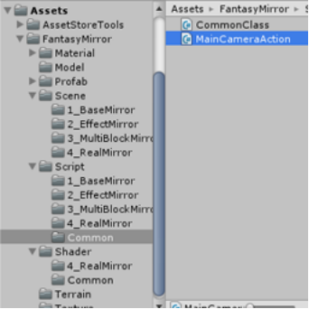
Press
mouse right button and move mouse, you can change the view direction.
Press
A/S/D/W key this Main Camera will be moved.
Step2 Drag
MirrorEffect.prefab from FantasyMirror/Profab/1_BaseMirror to scene.
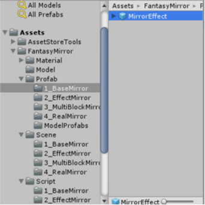
Now
you should see a green view frustum line frame with main camera and a red frustum
line
frame with mirror camera in the Scene View.
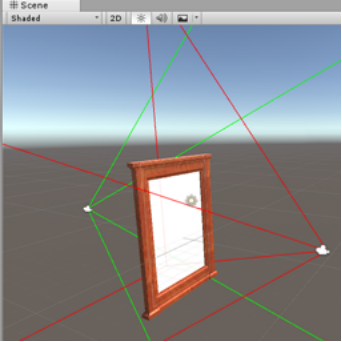
You
need NEITHER set the layer of MirrorSupport NOR set the culling mask of MirrorCamera.
The MirrorCamera will ignore MirrorSupport GameObject auto.
[[ In the Fantasy Mirror Primer, You need set the MirrorSupport to new layer(like layer A etc. The layer of the MirrorSupport
is UI in default) and set the culling mask of MirrorCamera to ignore it. ]]
Step3 Select
the MirrorFrame GameObject which be one child of the MirrorEffect GameObject.
In
the BaseMirrorMap script component you will see some parameters as follow:
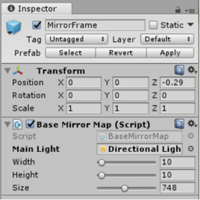
Main
Light: the scene main light, you need drag to.
Width:
the width of the MirrorFrame.
Height:
the height of the MirrorFrame.
The
width and height delineate the range of the Mirror Blocks in. It's integer.
It
can be setup in edit state. You have to keep they with the size of MirrorMask.
MirrorBlock
need be placed in the MirrorFrame area.
Size:
the size of the RenderTexture.
You
need set the value before playing. The bigger size will get more defination,
but
decrement FPS.
Now
you can place a model in front of the mirror. Play it.
2.
Effect Mirror
Step0 Create
a new scene.
Step1 Append
MainCameraAction script to Main Camera from FantasyMirror/Script/Common folder.
(
Reference BaseMirror )
Step2 Drag
MirrorEffect.prefab from FantasyMirror/Profab/2_EffectMirror folder to scene.
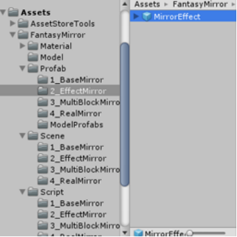
Step3 Select
the MirrorFrame GameObject( one child of the MirrorEffect GameObject ).
In
the EffectMirrorMap script component you will see some parameters as follow:
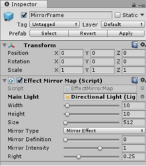
Main
Light: the scene main light, you need drag to.
Width:
the width of the MirrorFrame. (reference BaseMirror)
Height:
the height of the MirrorFrame. (reference BaseMirror)
Size:
the size of the RenderTexture. (reference BaseMirror)
Mirror
Type:
If
you select Mirror type, you will get a common mirror like BaseMirror and
the
following three parameters ( Mirror Definition / Mirror Intensity / Right )
will
be invalid.
If
you select Mirror Effect type, you will get a reflect plane which texture can
be
set in MirrorBlock.
Mirror
Definition: (Only be valid in Mirror Effect type)
The
value will result the mirror image of the GameObject in front of the mirror plane
blur
or clear.
Mirror
Intensity: (Only be valid in Mirror Effect type)
The
intensity of mirror reflecting effect.
Right:
(Only be valid in Mirror Effect type)
The
brightness of the mirror plane.
Step4 Select
the MirrorBlock(one child of MirrorFrame GameObject). In the Effect Mirror
Block
Script, you will see a parameter "Mirror Texture". You can replace the instance
with
your texture.
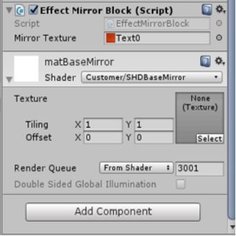
Now
Play it, you will see a mirror plane with a texture selected by you self.
You
can switch the common mirror model and mirror effect model in playing by changing
the
M Mirror Type value.
3.
MultiBlock Mirror
In
fact, both BaseMirror and EffectMirror can be composed of one or more blocks. You need
only
adjust the block's size and clone a mirror block. The parent of the new MirrorBlock and
the
original must be the same one. The other steps can reference BaseMirror and EffectMirror.
In
FantasyMirror/Profab/3_MulitBlockMirror folder, you can get ready-made multiblock mirror
prefab.
You
can add one of them to the scene and test it.
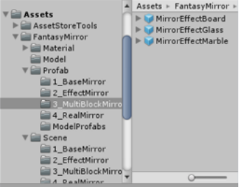
NOTE:
A
MirrorFame can have more one child( Mirror Block ). A MirrorEffect just have to be two
children
(
One is MirrorFrame, another is MirrorCamera).
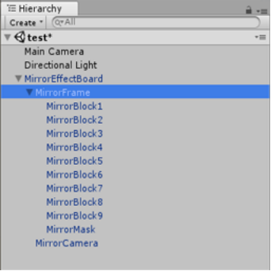
4.
Real Mirror
Step0 Create
a new scene.
Step1 Append
MainCameraAction script to Main Camera from FantasyMirror/Script/Common folder.
(
Reference BaseMirror )
Step2 Drag
RealMirror.prefab
from FantasyMirror/Profab/4_RealMirror folder to scene.
You
now get a GameObject named "RealMirror".
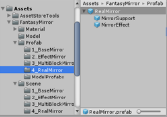
Step3 Select
the MirrorFrame GameObject( one child of the MirrorEffect GameObject ).
Drag
main light to the MirrorMap script component and adjust the others parameters.
(
Reference BaseMirror )
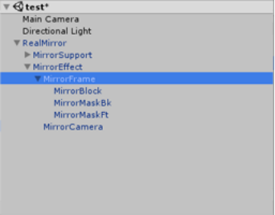
You
need Neither set the layer of MirrorSupport,
Nor set the MirrorCamera’s
culling mask.(Reference BaseMirror)
Step4 Drag
RealMirror.prefab
from FantasyMirror/Profab/4_RealMirror folder to scene again.
You
now get a GameObject named "RealMirror(1)".
Step5 Move
RealMirror(1)
to the back of Main Camera and
then rotate
180 degree around Y axis.
Adjust
the distance from the Main Camera.
Then
set up the children like Step3.
’s
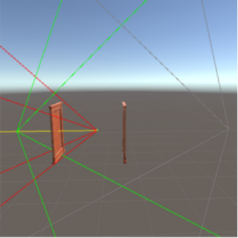
Step6 Select
the MirrorCamera under the
RealMirror.
Make the MirrorCamera script component enable
and
select the Action to right. Then drag the MirrorFrame under the
RealMirror(1)
to the
"Opposite
Mirror Frame" variable.
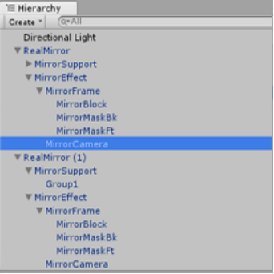
Step7 Select
the MirrorCamera under the
RealMirror(1).
Make the MirrorCamera script component enable
and
select the Action to right. Then drag MirrorFrame under the
RealMirror
to
the "Opposite Mirror
Frame"
variable.
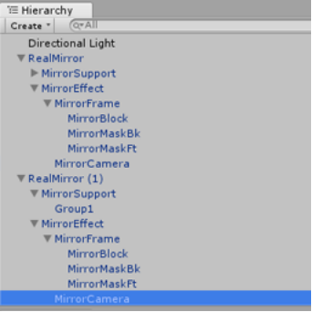
Now
you can put your model between the two RealMirro.
Play it.
NOTE:
A.
It's necessary to keep distance enough from MirrorCamera to MainCamera. Otherwise, the drawing
will
be incorrect. You can adjust them in Scene View.
B.
If you want adjust the distance from MirrorCamera to MainCamera, you need just move the
MirrorFrame
position, but not MirrorCamera's.
C.
The MirrorFrame can be moved and rotated except rolling ( rotate around the forward of the
MirrorFrame).
D.
If you want increment the FPS, you can try reduce the "Size" value of the MirrorMap
script
component in the MirrorFrame GameObject.
------------------------------------------------
Notes
------------------------------------------------
You
can replace the MirrorSupport with your self model. In BaseMirror scene, the material of
MirrorSupport
must be the matMirrorSupportBM. In RealMirror scene, the mailerial of MirrorSupport
must
be the matMirrorSupportRM.